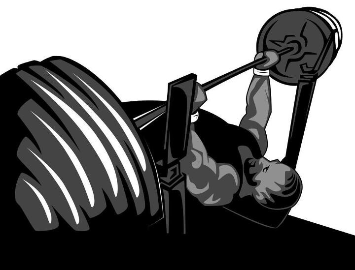

Exercise Description
Set up a barbell on a decline bench. Lower the barbell to your chest, pause for 1-2 seconds, then press it back up. The pause at the bottom eliminates momentum and increases muscle tension.
Reps and Sets
Beginners: 3 sets of 10-15 reps
Weights: 35kg
Rest time between each set: 2 min
Video Implementation